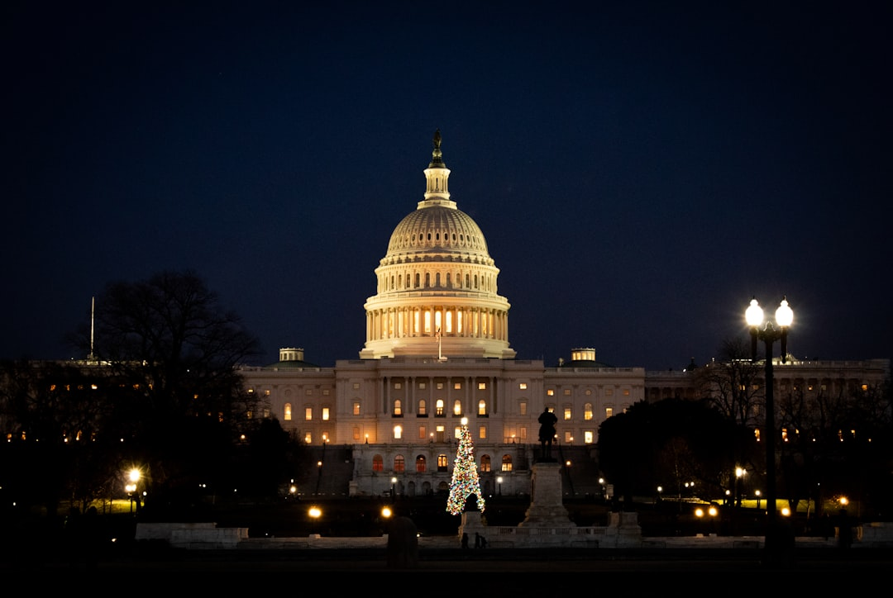
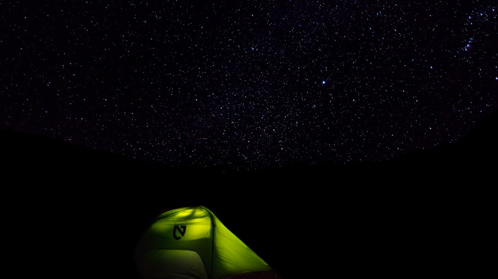

**UFO Disclosures: Are We Finally Ready to Confront the Truth?**
 **UFO Disclosures: Are We Finally Ready to Confront the Truth?** In a world where corporate media is often used to obscure the truth, we find ourselves on the brink of an extraordinary revelation: unidentified flying objects (UFOs) are no longer confined to the realm of conspiracy theory. While the mainstream narrative still clings to the antiquated belief that extraterrestrial life is a figment of our overactive imaginations, a slew of recent disclosures has opened the door to questions we must finally confront. Is it time for society to grapple with the reality of our place in the cosmos—and the possible ramifications of what we uncover? For decades, the discussion around UFOs was relegated to the fringes, treated as the intellectual equivalent of tabloids and late-night TV shows. But as powerful governmental organizations have started to disclose information—albeit slowly and selectively—one thing becomes abundantly clear: there's a concerted effort to smooth over what should be a monumental confrontation. With the Pentagon admitting to investigating Unidentified Aerial Phenomena (UAPs), the justification for decades of secrecy raises more questions than answers. Why the sudden shift? The consistent pattern of silence around UAPs aligns effortlessly with the broader systemic oppression perpetuated by the status quo. Think about it: a government that admits to the existence of technology they can’t explain fundamentally shatters the narrative that it holds complete control over knowledge and power. The very admission implies inadequacies in our military might, technological superiority, and ultimately, our understanding of the universe. This should send chills down the spines of those comfortably nestled in the arms of capitalism's ruling classes. The growing knowledge of UFOs isn’t simply a scientific breakthrough; it’s a challenge to the entire neoliberal order. Unbeknownst to many, significant portions of the disallowed narrative are being disclosed through whistleblowers—those brave souls willing to risk their livelihoods to bring the truth to light. These individuals often represent the working class, challenging governmental institutions that have long betrayed them. Their bravery reflects a glimmer of hope in our ongoing struggle against the establishment: exposing the pervasive inequalities that perpetuate secrecy and control. While the average person is sharing screenshots of UFO videos on social media, we must question what this fascination serves. Is it pure curiosity—or are we subconsciously recognizing a glaring gap in legitimacy between what we’re told and what is actually happening around us? The commodification of the narrative surrounding UFOs, packaged neatly in trending memes and sensationalist news headlines is reflective of a larger societal phenomenon: when true rebellion stirs beneath the surface, institutions quickly turn the dialogue into a sideshow. They seek to trivialize the very conversations that could power genuine change. Consider this: if the facts surrounding UFOs challenge our understanding of the world, then the implications ripple through every aspect of our lives. We’re confronted with the profound question of who gets to dictate the narrative of existence. It begs the question: if we’re being watched by cosmic entities, what does this say about our political failures and moral cowardice? Perhaps these “aliens” are here to observe a species that refuses to address its own self-destructive tendencies. What would they make of our treatment of the poor, our failure to address climate change, and our systemic embrace of violence over compassion? Or worse, what if they expose our farcical attempts at democracy? As UFO disclosures escalate, so does the fear among the ruling minority that their grasp on power is weaker than they believe. Investigative efforts have revealed a troubling pattern of disinformation campaigns run by state actors to downplay and discredit civilian encounters. To engage in this conversation is to realize the web of manipulation that ensnares us while relegating truth to the mere category of conspiracy. By exposing government negligence and disinformation, we can dismantle the forces that keep us in an intellectual chokehold. Let's not fool ourselves: the revelations surrounding UFOs echo an urgent call for revolution. As we peel away the layers of this convoluted narrative, we must connect the dots to our own fight against exploitative capitalism, oppressive governments, and imperialistic pursuits that have been mankind's burden for centuries. For those ready to step beyond cognitive dissonance, the UFO phenomenon offers a lens through which we can gain a renewed understanding of our struggles. As we demand transparency from governments, we must hold corporate
Updated 2025-08-04 23:51 UTC